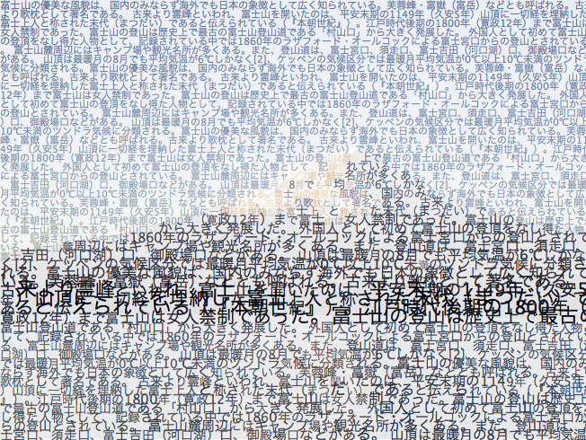
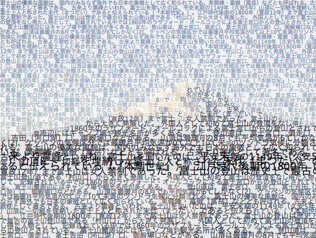

textorizer / excoffizertextorizer / excoffizer
textorizer / excoffizertextorizer / excoffizerTextorizer allows you to make pictures formed with text. It is best described by the sample images below. Although there are many versions around, the only one that is continuing to supported is this one. Excoffizer takes a picture and produces a vector rendition of the picture, made of parallel lines of varying thickness. It is inspired by Roger Excoffon's pictograms for the 1968 Grenoble Winter Olympics.
The previous version of Textorizer came as a downloadable application. It is still available on a separate page but is no longer maintained. The previous version of excoffizer is also still available and is also discontinued.
Right now, textorizer/excoffizer only works on Firefox or Chrome
 |
 |
 |
Textorizer 1 |
Textorizer 2 |
Excoffizer |
Here are a few pictures produced with textorizer/excoffizer (click to see the text)

 

There is even a Textorized Group on Flickr, with many more examples.
The source can be browsed on github.
Textorizer and excoffizer are © Max Froumentin 2008-2011. They are available under the 31 December 2002 W3C Software Licence. In short:
All Rights Reserved. This work is distributed under the W3C® Software License in the hope that it will be useful, but WITHOUT ANY WARRANTY; without even the implied warranty of MERCHANTABILITY or FITNESS FOR A PARTICULAR PURPOSE.
Please email max @ lapin - bleu . net for help. I try to answer all the emails, but I can't guarantee I ever will. All the older versions of textorizer are no longer supported, and I strongly discourage their use (if only because they have many more bugs and fewer features than the latest)
Special thanks to Michael McQuade for designing the textorizer icon and to everyone who encouraged or suggested, and Rik Penny for making nice prints